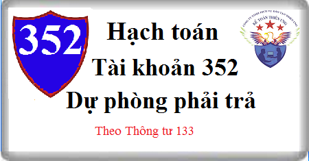

Hướng dẫn cách hạch toán Tài khoản 352 theo thông tư 133, cách hạch toán dự phòng phải trả khác, dự phòng bảo hành sản phẩm hàng hóa, dự phòng bảo hành công trình xây dựng.
1. Nguyên tắc kế toán Tài khoản 352 - Dự phòng phải trả
a) Tài khoản này dùng để phản ánh các khoản dự phòng phải trả hiện có, tình hình trích lập và sử dụng dự phòng phải trả của doanh nghiệp.
b) Dự phòng phải trả chỉ được ghi nhận khi thỏa mãn các điều kiện sau:
- Doanh nghiệp có nghĩa vụ nợ hiện tại (nghĩa vụ pháp lý hoặc nghĩa vụ liên đới) do kết quả từ một sự kiện đã xảy ra;
- Sự giảm sút về những lợi ích kinh tế có thể xảy ra dẫn đến việc yêu cầu phải thanh toán nghĩa vụ nợ;
- Đưa ra được một ước tính đáng tin cậy về giá trị của nghĩa vụ nợ đó.
c) Giá trị được ghi nhận của một khoản dự phòng phải trả là giá trị được ước tính hợp lý nhất về khoản tiền sẽ phải chi để thanh toán nghĩa vụ nợ hiện tại tại ngày kết thúc kỳ kế toán.
d) Khoản dự phòng phải trả được lập tại thời điểm lập Báo cáo tài chính. Trường hợp số dự phòng phải trả cần lập ở kỳ kế toán này lớn hơn số dự phòng phải trả đã lập ở kỳ kế toán trước chưa sử dụng hết thì số chênh lệch được ghi nhận vào chi phí sản xuất, kinh doanh của kỳ kế toán đó. Trường hợp số dự phòng phải trả lập ở kỳ kế toán này nhỏ hơn số dự phòng phải trả đã lập ở kỳ kế toán trước chưa sử dụng hết thì số chênh lệch phải được hoàn nhập.
Đối với dự phòng phải trả về bảo hành công trình xây lắp thì dự phòng được lập cho từng công trình xây lắp và được lập vào cuối kỳ kế toán.
đ) Chỉ những khoản chi phí liên quan đến khoản dự phòng phải trả đã lập ban đầu mới được bù đắp bằng khoản dự phòng phải trả đó.
e) Không được ghi nhận khoản dự phòng cho các khoản lỗ hoạt động trong tương lai, trừ khi chúng liên quan đến một hợp đồng có rủi ro lớn và thỏa mãn điều kiện ghi nhận khoản dự phòng. Nếu doanh nghiệp có hợp đồng có rủi ro lớn, thì nghĩa vụ nợ hiện tại theo hợp đồng phải được ghi nhận và đánh giá như một khoản dự phòng và khoản dự phòng được lập riêng biệt cho từng hợp đồng có rủi ro lớn.
g) Các khoản dự phòng phải trả thường bao gồm:
- Dự phòng phải trả bảo hành sản phẩm, hàng hóa;
- Dự phòng bảo hành công trình xây dựng;
- Dự phòng phải trả khác, bao gồm cả khoản dự phòng trợ cấp thôi việc theo quy định của pháp luật, khoản dự phòng cho việc sửa chữa, bảo dưỡng TSCĐ định kỳ (theo yêu cầu kỹ thuật), khoản dự phòng phải trả đối với hợp đồng có rủi ro lớn mà trong đó những chi phí bắt buộc phải trả cho các nghĩa vụ liên quan đến hợp đồng vượt quá những lợi ích kinh tế dự tính thu được từ hợp đồng đó;
h) Khoản dự phòng phải trả về bảo hành sản phẩm, hàng hóa được ghi nhận vào chi phí bán hàng, khoản dự phòng phải trả về chi phí bảo hành công trình xây lắp được ghi nhận vào chi phí sản xuất kinh doanh dở dang, khoản dự phòng phải trả khác được ghi nhận vào chi phí liên quan tùy theo nội dung chi phí.
i) Số dự phòng phải trả về bảo hành công trình xây lắp đã lập lớn hơn chi phí thực tế phát sinh thì số chênh lệch được hoàn nhập ghi vào TK 711 “Thu nhập khác”. Số hoàn nhập dự phòng phải trả về bảo hành sản phẩm, hàng hóa được ghi giảm chi phí bán hàng. Số hoàn nhập dự phòng phải trả khác được ghi giảm chi phí liên quan tùy theo nội dung chi phí.
k) Khi doanh nghiệp nhận được khoản bồi hoàn của một bên thứ 3 để thanh toán một phần hay toàn bộ chi phí cho khoản dự phòng thì khoản được bồi hoàn từ bên thứ 3 ghi nhận vào thu nhập khác.
2. Kết cấu và nội dung Tài khoản 352 - Dự phòng phải trả
Bên Nợ:
- Ghi giảm dự phòng phải trả khi phát sinh khoản chi phí liên quan đến khoản dự phòng đã được lập ban đầu;
- Ghi giảm (hoàn nhập) dự phòng phải trả khi doanh nghiệp chắc chắn không còn phải chịu sự giảm sút về kinh tế do không phải chi trả cho nghĩa vụ nợ;
- Ghi giảm dự phòng phải trả về số chênh lệch giữa số dự phòng phải trả phải lập năm nay nhỏ hơn số dự phòng phải trả đã lập năm trước chưa sử dụng hết.
Bên Có: Phản ánh số dự phòng phải trả trích lập tính vào chi phí.
Số dư bên Có: Phản ánh số dự phòng phải trả hiện có cuối kỳ.
Tài khoản 352 có 3 tài khoản cấp 2
- Tài khoản 3521 - Dự phòng bảo hành sản phẩm, hàng hóa: Tài khoản này dùng để phản ánh số dự phòng bảo hành sản phẩm, hàng hóa cho số lượng sản phẩm, hàng hóa đã xác định là tiêu thụ trong kỳ;
- Tài khoản 3522 - Dự phòng bảo hành công trình xây dựng: Tài khoản này dùng để phản ánh số dự phòng bảo hành công trình xây dựng đối với các công trình, hạng mục công trình hoàn thành, bàn giao trong kỳ;
- Tài khoản 3524 - Dự phòng phải trả khác: Tài khoản này phản ánh các khoản dự phòng phải trả khác theo quy định của pháp luật ngoài các khoản dự phòng đã được phản ánh nêu trên, như: dự phòng trợ cấp thôi việc theo quy định của Luật lao động, chi phí sửa chữa, bảo dưỡng, TSCĐ định kỳ...
3. Cách hạch toán dự phòng phải trả Tài khoản 352:
a) Phương pháp kế toán dự phòng bảo hành sản phẩm, hàng hóa:
- Trường hợp doanh nghiệp bán hàng cho khách hàng có kèm theo giấy bảo hành sửa chữa cho các khoản hỏng hóc do lỗi sản xuất được phát hiện trong thời gian bảo hành sản phẩm, hàng hoá, doanh nghiệp tự ước tính chi phí bảo hành trên cơ sở số lượng sản phẩm, hàng hóa đã xác định là tiêu thụ trong kỳ. Khi lập dự phòng cho chi phí sửa chữa, bảo hành sản phẩm, hàng hóa đã bán, ghi:
Nợ TK 642 - Chi phí quản lý kinh doanh (6421)
Có TK 352 - Dự phòng phải trả (3521).
- Khi phát sinh các khoản chi phí liên quan đến khoản dự phòng phải trả về bảo hành sản phẩm, hàng hóa đã lập ban đầu, như chi phí nguyên vật liệu, chi phí nhân công trực tiếp, chi phí khấu hao TSCĐ, chi phí dịch vụ mua ngoài...,:
Nợ TK 154 - Chi phí SXKD dở dang
Nợ TK 133 - Thuế GTGT được khấu trừ (nếu có)
Có các TK 111, 112, 152, 214, 331, 334, 338,...
- Khi sửa chữa bảo hành sản phẩm, hàng hoá hoàn thành bàn giao cho khách hàng, ghi:
Nợ TK 352 - Dự phòng phải trả (3521)
Nợ TK 642 - Chi phí quản lý kinh doanh (6421) (phần dự phòng phải trả về bảo hành sản phẩm, hàng hoá còn thiếu)
Có TK 154 - Chi phí sản xuất, kinh doanh dở dang.
- Khi lập Báo cáo tài chính, doanh nghiệp phải xác định số dự phòng bảo hành sản phẩm, hàng hóa cần trích lập:
+ Trường hợp số dự phòng cần lập ở kỳ kế toán này lớn hơn số dự phòng phải trả đã lập ở kỳ kế toán trước nhưng chưa sử dụng hết thì số chênh lệch hạch toán vào chi phí, ghi:
Nợ TK 642 - Chi phí quản lý kinh doanh (6421)
Có TK 352 - Dự phòng phải trả (3521).
+ Trường hợp số dự phòng phải trả cần lập ở kỳ kế toán này nhỏ hơn số dự phòng phải trả đã lập ở kỳ kế toán trước nhưng chưa sử dụng hết thì số chênh lệch hoàn nhập ghi giảm chi phí, ghi:
Nợ TK 352 - Dự phòng phải trả (3521)
Có TK 642 - Chi phí quản lý kinh doanh (6421)
b) Phương pháp kế toán dự phòng bảo hành công trình xây dựng:
- Việc trích lập dự phòng bảo hành công trình xây dựng được thực hiện cho từng công trình, hạng mục công trình hoàn thành, bàn giao trong kỳ. Khi xác định số dự phòng phải trả về chi phí bảo hành công trình xây dựng, ghi:
Nợ TK 154 - Chi phí sản xuất, kinh doanh dở dang.
Có TK 352 - Dự phòng phải trả (3522).
- Khi phát sinh các khoản chi phí liên quan đến khoản dự phòng phải trả về bảo hành công trình xây dựng đã lập ban đầu, như chi phí nguyên vật liệu, chi phí nhân công trực tiếp, chi phí khấu hao TSCĐ, chi phí dịch vụ mua ngoài...,:
Nợ TK 154 - Chi phí sản xuất, kinh doanh dở dang.
Nợ TK 133 - Thuế GTGT được khấu trừ (nếu có)
Có các Tài khoản 111, 112, 152, 214, 331, 334, 338,...
- Khi sửa chữa bảo hành công trình hoàn thành bàn giao cho khách hàng, kết chuyển chi phí bảo hành công trình thực tế phát sinh, ghi:
Nợ TK 352 - Dự phòng phải trả (3522)
Nợ TK 632 - Giá vốn hàng bán (chênh lệch giữa số dự phòng đã trích lập nhỏ hơn chi phí thực tế về bảo hành)
Có TK 154 - Chi phí sản xuất, kinh doanh dở dang.(số chi phí thực tế về bảo hành công trình).
- Hết thời hạn bảo hành công trình xây dựng, nếu công trình không phải bảo hành hoặc số dự phòng phải trả về bảo hành công trình xây dựng lớn hơn chi phí thực tế phát sinh thì số chênh lệch phải hoàn nhập, ghi:
Nợ TK 352 - Dự phòng phải trả (3522)
Có TK 711 - Thu nhập khác.
c) Phương pháp kế toán dự phòng phải trả khác:
- Khi trích lập dự phòng cho các khoản phải trả khác, dự phòng cho các hợp đồng có rủi ro lớn mà trong đó những chi phí bắt buộc phải trả cho các nghĩa vụ liên quan đến hợp đồng vượt quá những lợi ích kinh tế dự tính thu được từ hợp đồng đó (như khoản bồi thường hoặc đền bù do việc không thực hiện được hợp đồng, các vụ kiện pháp lý...), ghi:
Nợ TK 642 - Chi phí quản lý kinh doanh (6422)
Có TK 352 - Dự phòng phải trả (3524).
- Khi trích lập dự phòng cho các khoản chi phí sửa chữa, bảo dưỡng TSCĐ định kỳ, dự phòng trợ cấp thôi việc theo quy định của Luật lao động..., ghi:
Nợ các TK 154, 631, 642
Có TK 352 - Dự phòng phải trả
- Khi phát sinh các khoản chi phí liên quan đến khoản dự phòng phải trả đã lập, ghi:
Nợ TK 352 - Dự phòng phải trả (3524)
Có các TK 111, 112, 241, 331,...
- Khi lập Báo cáo tài chính, doanh nghiệp phải xác định số dự phòng phải trả cần trích lập:
+ Trường hợp số dự phòng phải trả cần lập ở kỳ kế toán này lớn hơn số dự phòng phải trả đã lập ở kỳ kế toán trước nhưng chưa sử dụng hết thì số chênh lệch hạch toán vào chi phí, ghi:
Nợ các TK liên quan.
Có TK 352 - Dự phòng phải trả (3524).
+ Trường hợp số dự phòng phải trả cần lập ở kỳ kế toán này nhỏ hơn số dự phòng phải trả đã lập ở kỳ kế toán trước nhưng chưa sử dụng hết thì số chênh lệch hoàn nhập ghi giảm chi phí, ghi:
Nợ TK 352 - Dự phòng phải trả (3524)
Có các TK liên quan.
d) Trong một số trường hợp, doanh nghiệp có thể tìm kiếm một bên thứ 3 để thanh toán một phần hay toàn bộ chi phí cho khoản dự phòng (ví dụ, thông qua các hợp đồng bảo hiểm, các khoản bồi thường hoặc các giấy bảo hành của nhà cung cấp), bên thứ 3 có thể hoàn trả lại những gì mà doanh nghiệp đã thanh toán. Khi doanh nghiệp nhận được khoản bồi hoàn của một bên thứ 3 để thanh toán một phần hay toàn bộ chi phí cho khoản dự phòng, ghi:
Nợ các TK 111, 112,...
Có TK 711- Thu nhập khác.
-------------------------------
Kế toán Diệu Tâm xin chúc bạn làm tốt công việc kế toán!
